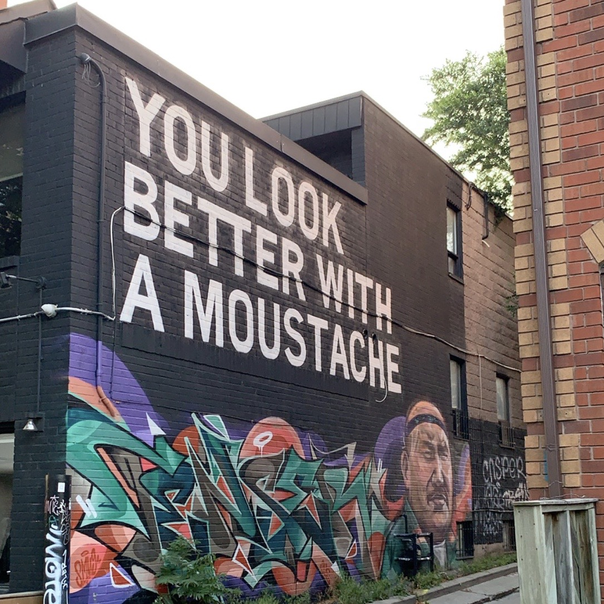
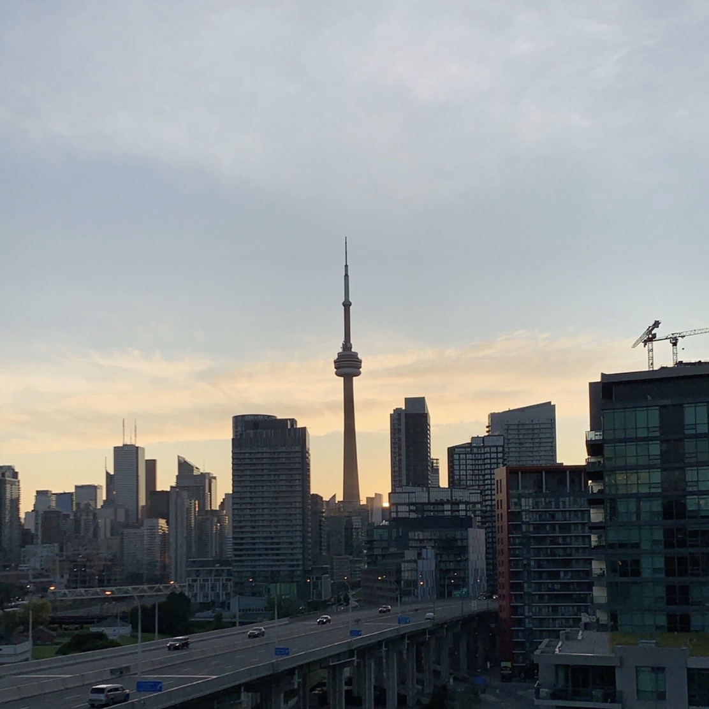
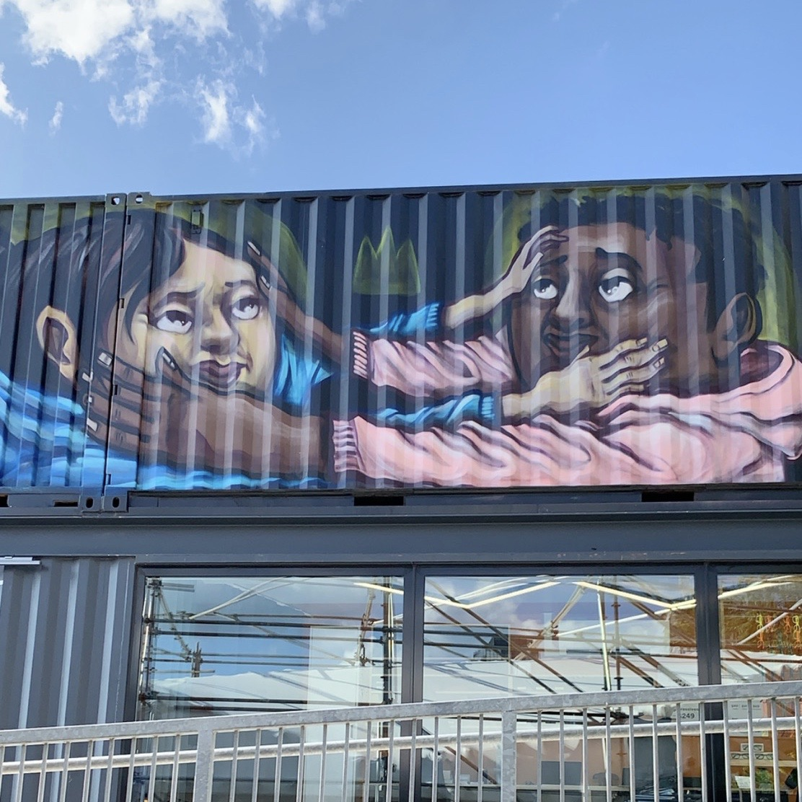

August 2019
In August of 2019, my best friends and I planned yet another trip. Half of it was going to be in the States and the other half was going to be in Canada.
It was another road trip. My best friend and I travled across the country to Delaware, yet again, to visit our other best friend. Then the three of us, traveled to Washington D.C. and a couple days later, drove 9 hours to Niagra Falls in Canada. I've been to Niagra Falls before, in New York, but it's so much more worth it to cross the border and see them from Canada. I think it was one of the most beautiful things I have ever seen in my entire life. No wonder it's been added as the eighth wonder of the world.
After visiting Niagra Falls, we had about an hour and a half to Toronto, Ontario, Canada. We had rented an Airbnb in the city with an amazing view of the CN Tower.
Toronto was definitely one of my favorite places to visit. It had so many restaurants and shops that we could try and explore. There was even a market in the city that was called Stackt, which is a large shipping container market. All the shops were based out of shipping containers. There was just so much character and art that filled every spot. It was so great to see.
